Parcours rapide : consulter une IMF
Tous les profils.
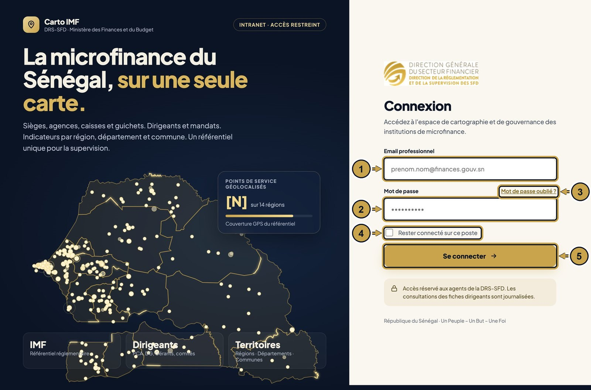
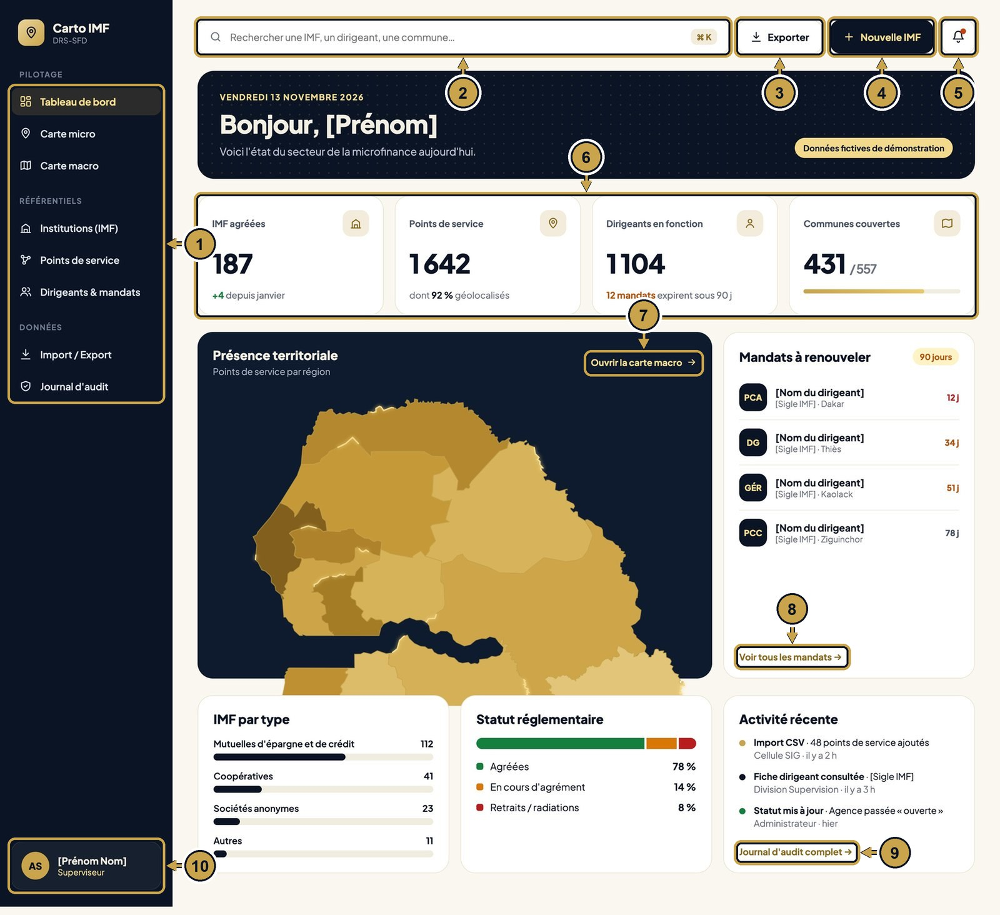
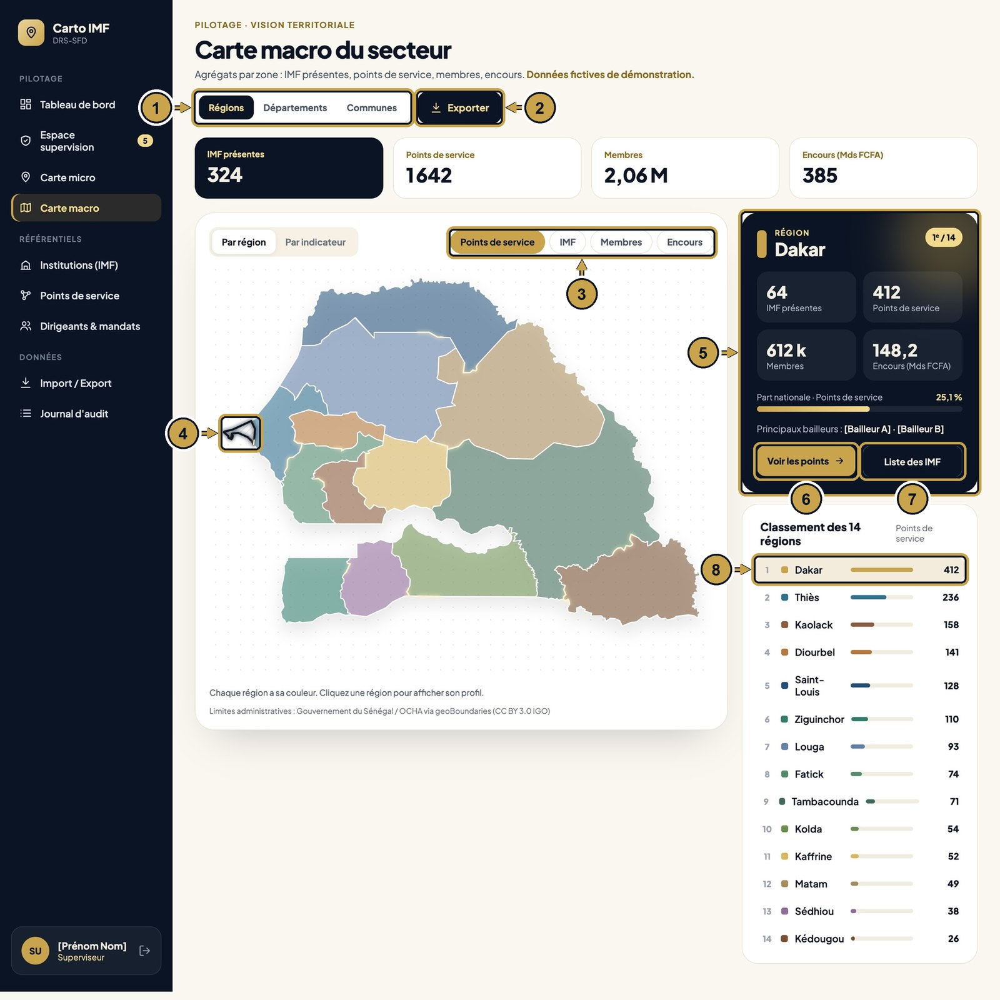
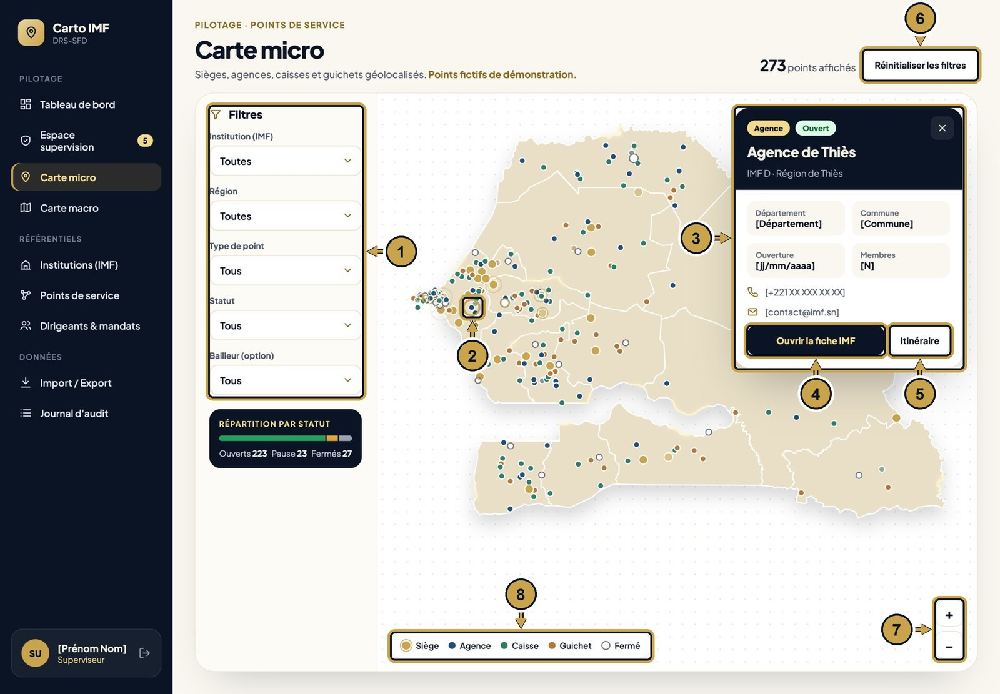
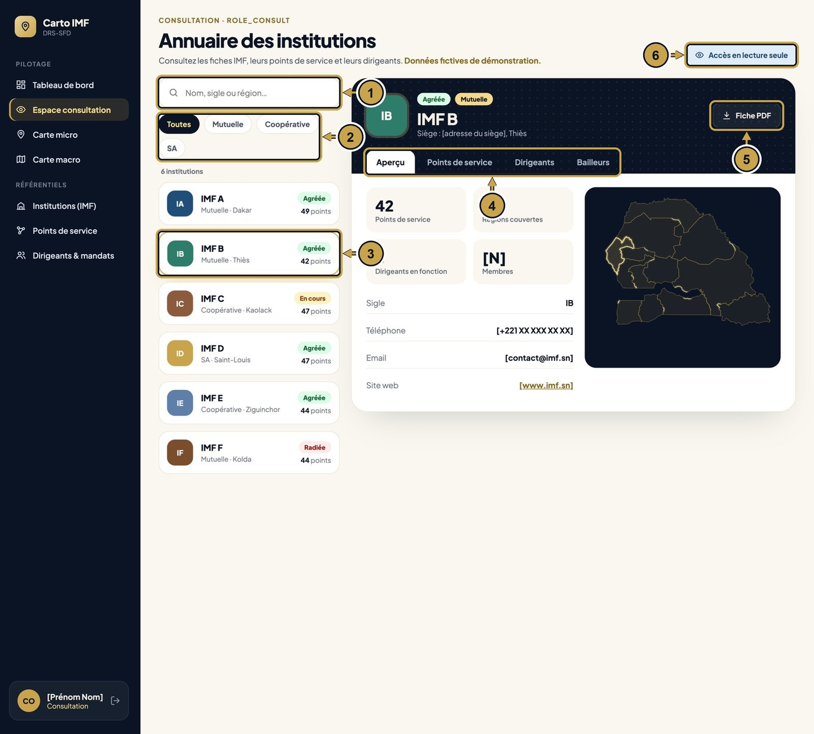
Parcours rapide : enregistrer une nouvelle IMF
Superviseur et Administrateur.
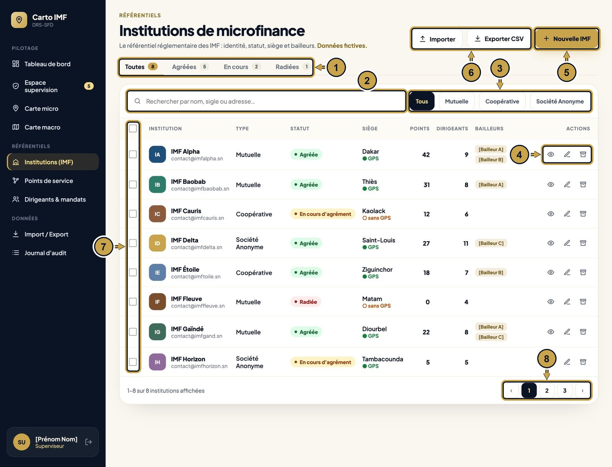
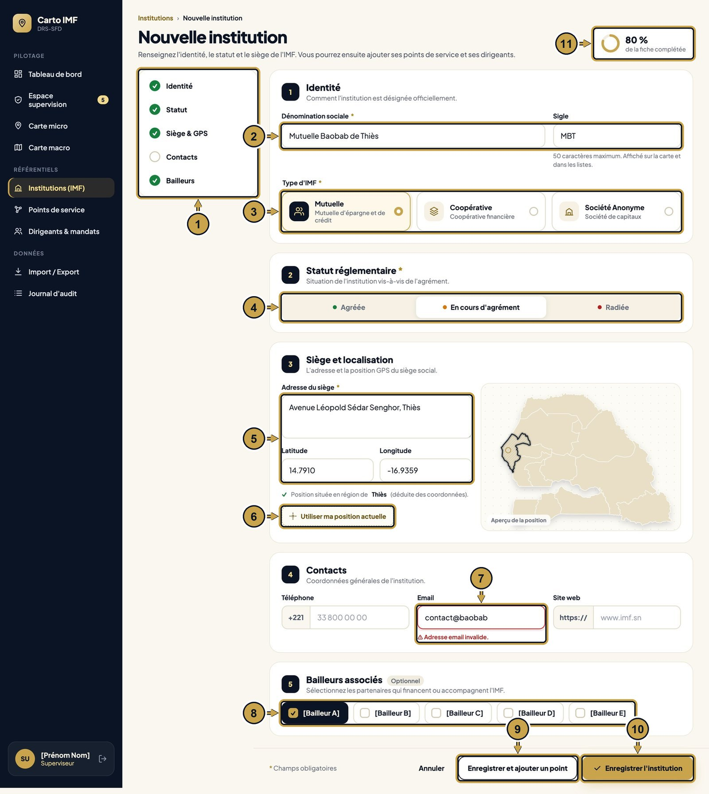
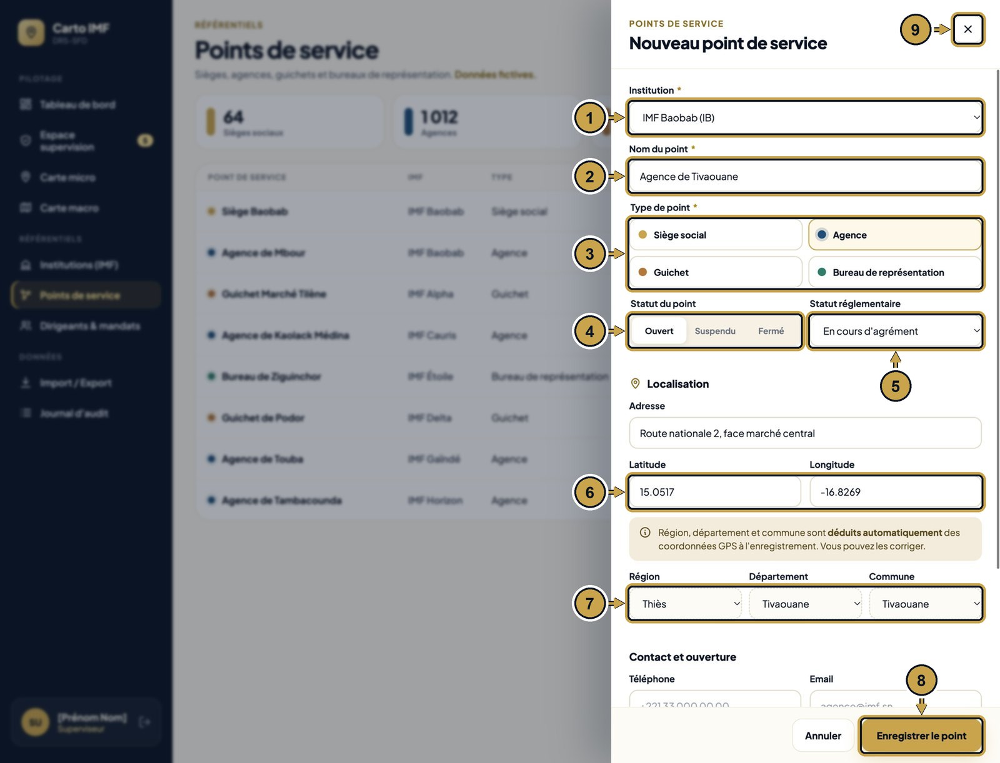
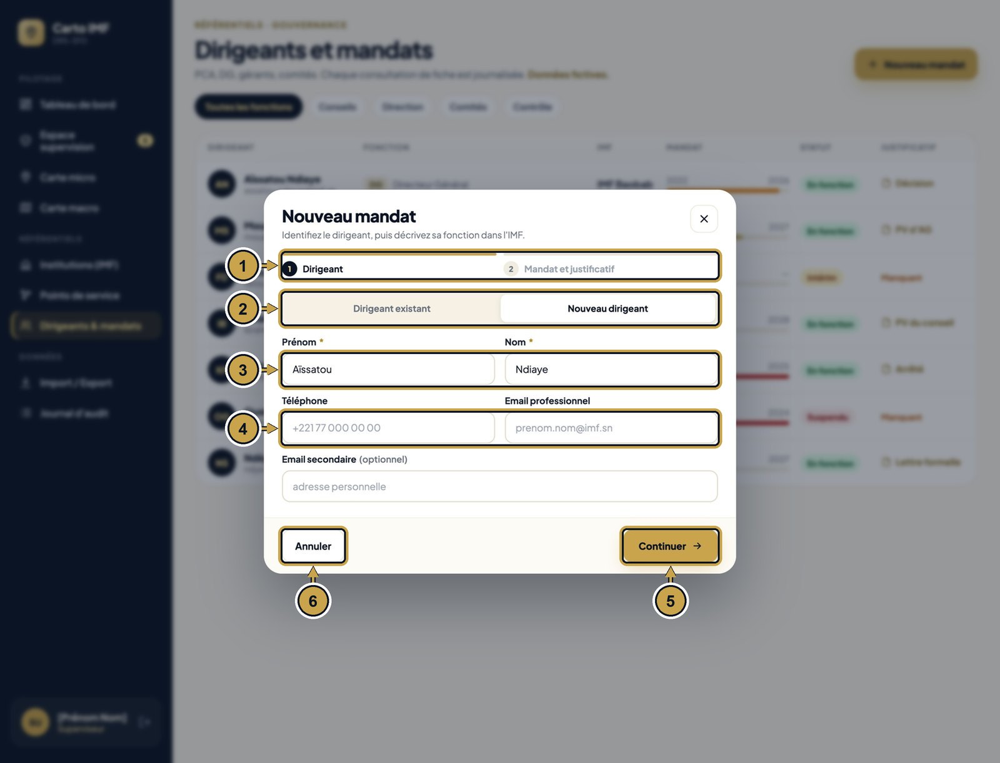
Se connecter
- 1
Saisis ton email professionnel.
- 2
Saisis ton mot de passe.
- 3
Mot de passe oublié ? Clique ici pour en recevoir un nouveau.
- 4
Coche cette case pour rester connecté sur ton poste.
- 5
Clique sur « Se connecter » → tu arrives sur le Tableau de bord.
Tableau de bord
- 1
Le menu : clique sur une ligne pour changer de page. Il change selon ton rôle.
- 2
Tape le nom d'une IMF, d'un dirigeant ou d'une commune pour la trouver.
- 3
Exporte les chiffres affichés.
- 4
Nouvelle IMF → ouvre le formulaire de création.
- 5
Tes notifications : imports terminés, mandats qui expirent.
- 6
Les 4 chiffres clés du secteur.
- 7
Ouvrir la carte macro → page Carte macro.
- 8
Voir tous les mandats → page Dirigeants et mandats.
- 9
Journal d'audit complet → historique de toutes les actions.
- 10
Ton nom et ton rôle.
Carte macro
- 1
Choisis le niveau : Régions, Départements ou Communes.
- 2
Exporte les chiffres de la carte.
- 3
Choisis ce que la couleur montre : points de service, IMF, membres ou encours.
- 4
Clique sur une région → sa fiche s'affiche à droite.
- 5
La fiche de la région sélectionnée.
- 6
Voir les points → Carte micro, filtrée sur cette région.
- 7
Liste des IMF → institutions de cette région.
- 8
Clique une ligne du classement : même effet qu'un clic sur la carte.
Carte micro
- 1
Filtre par institution, région, type, statut ou bailleur. La carte se met à jour.
- 2
Clique sur un point → sa fiche s'ouvre.
- 3
La fiche du point : département, commune, date d'ouverture, contacts.
- 4
Ouvrir la fiche IMF → fiche complète de l'institution.
- 5
Itinéraire jusqu'à ce point.
- 6
Efface tous les filtres.
- 7
Zoom avant et arrière (ou molette de la souris).
- 8
La légende : la couleur indique le type de point, le rond vide un point fermé.
Espace consultation
- 1
Cherche une IMF par nom, sigle ou région.
- 2
Filtre par type d'IMF.
- 3
Clique sur une IMF → sa fiche s'affiche à droite.
- 4
Les onglets de la fiche : aperçu, points de service, dirigeants, bailleurs.
- 5
Télécharge la fiche de l'IMF en PDF.
- 6
Le consultant lit seulement : il ne peut rien modifier.
Espace supervision
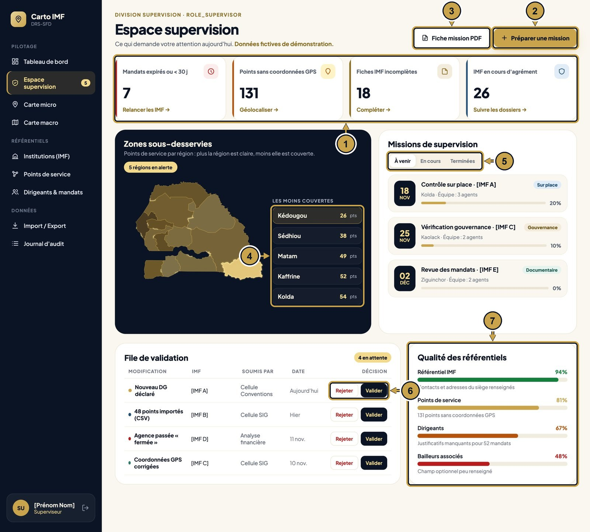
- 1
Les 4 alertes du jour. Clique le lien en bas de chaque carte pour les traiter.
- 2
Préparer une mission de contrôle.
- 3
Télécharge la fiche mission en PDF.
- 4
Les régions les moins couvertes. Clique une région pour la voir sur la carte.
- 5
Missions à venir, en cours ou terminées.
- 6
Valide ou rejette chaque modification envoyée par les équipes.
- 7
Ce qu'il reste à compléter dans les référentiels.
Institutions (IMF)
- 1
Filtre par statut : toutes, agréées, en cours, radiées.
- 2
Cherche une IMF par nom, sigle ou adresse.
- 3
Filtre par type d'IMF.
- 4
Œil : voir la fiche. Crayon : modifier. Boîte : archiver.
- 5
Nouvelle IMF → formulaire « Nouvelle institution ».
- 6
Importer → page Import et export. Exporter CSV → télécharge la liste.
- 7
Coche plusieurs IMF pour agir sur toutes en même temps.
- 8
Passe aux pages suivantes.
Créer ou modifier une IMF
- 1
Le sommaire : une coche verte indique une partie remplie. Clique pour y aller.
- 2
Saisis le nom officiel et le sigle. L'astérisque * signale un champ obligatoire.
- 3
Choisis le type d'IMF.
- 4
Choisis le statut réglementaire.
- 5
Saisis l'adresse et les coordonnées GPS. La région est trouvée automatiquement.
- 6
Ou clique ici pour utiliser ta position actuelle.
- 7
Un champ incorrect devient rouge avec la raison. Corrige-le avant d'enregistrer.
- 8
Coche les bailleurs de l'IMF (facultatif).
- 9
Enregistre, puis ouvre directement le formulaire « Nouveau point de service ».
- 10
Enregistre l'IMF → retour à la liste des institutions.
- 11
La part de la fiche déjà remplie.
Ajouter un point de service
- 1
Choisis l'IMF à laquelle appartient le point.
- 2
Donne un nom au point.
- 3
Choisis le type : siège, agence, guichet ou bureau.
- 4
Statut du point : ouvert, suspendu ou fermé.
- 5
Statut réglementaire du point.
- 6
Saisis la latitude et la longitude.
- 7
Région, département et commune se remplissent seuls. Tu peux les corriger.
- 8
Enregistre le point → il apparaît sur la Carte micro.
- 9
Ferme le panneau sans enregistrer.
Enregistrer un dirigeant et son mandat
- 1
Deux étapes : d'abord le dirigeant, ensuite son mandat.
- 2
Choisis une personne déjà enregistrée, ou crée une nouvelle personne.
- 3
Saisis le prénom et le nom (obligatoires).
- 4
Ajoute le téléphone et l'email.
- 5
Continuer → étape 2 : fonction (PCA, DG…), dates du mandat et justificatif.
- 6
Annule sans rien enregistrer.
Importer et exporter
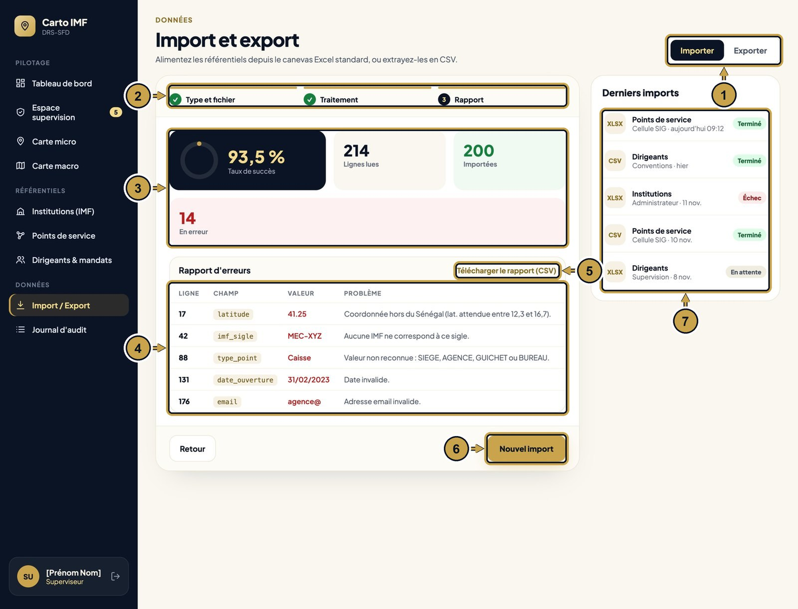
- 1
Choisis Importer ou Exporter.
- 2
Les 3 étapes : choisir le type et déposer le fichier (CSV ou Excel), traitement, rapport.
- 3
Le bilan : taux de succès, lignes lues, importées et en erreur.
- 4
Chaque erreur indique la ligne, la colonne, la valeur et le problème. Corrige ton fichier.
- 5
Télécharge la liste des erreurs en CSV.
- 6
Nouvel import → recommence avec le fichier corrigé.
- 7
Historique des imports : terminé, échec ou en attente.